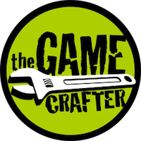

About
Wasted Youth is a satirical look at the things we obsessed over when we were young, possibly still do for some of us. Have you ever gotten so caught up in collecting comic books that your forgot they are supposed to be read. Have you ever bought a toy but never touched it once because it has to stay mint on card. Then Wasted Youth is about you.
Wasted Youth is a card game with a central collection mechanic. Collect the things you're looking for without giving your opponent what they need to go out first. Mixed in with the collectible cards are event cards which will either boost a player's position or take down an opponent.

- Status: Buy it now
- Mechanics: Hand Management, Set Collection
- Available on: GameCrafters